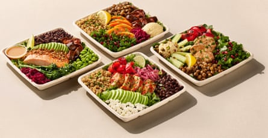

Pret a Manger prompted social media outrage two years ago with its £7.15 “posh” cheese and pickle baguette , so it may be bracing itself for a possible backlash after launching a new “premium” lunchtime salad that costs “from £12.95”.
The sandwich chain told the Guardian that in response to “a shift in what customers want from lunch”, it was launching four new “supersized” salad offerings. Three cost more than the purported psychological £10 “maximum price” that many are willing to pay for a takeaway lunch.
With growing numbers of employers increasing their office attendance requirements , the “grab and go” lunch market is bigger business than it has been in recent years.
Pret’s new Super Plates salad range will be available at more than 250 shops nationwide from Wednesday, and the priciest of the four is the “miso salmon” version, which includes roasted salmon, avocado, black rice and quinoa, broccoli and edamame soya beans. This will cost “from £12.95”, which presumably reflects the fact that those eating in rather than taking away typically pay more because of VAT, but may also be linked to the differing prices across its outlets.
The starting prices for the other three salads, centred on chipotle chicken, butternut squash and shawarma chicken, are £9.95 or £10.95.
It is understood Pret’s most expensive takeaway salad until now was a salmon and mango one that can be picked up in at least some central London outlets for £7.95.
Weighing in at about 450 grams-plus, Pret said the new items were almost 60% larger on average than its existing salad range and “will meet the growing demand we are seeing for more substantial, protein-rich salads”.
Pret a Manger’s Super Plates salad range.Photograph: Jamie Orlando Smith/Pret a Manger
A spokesperson for Pret said the use of more premium ingredients “reflects the growing trend of workers ‘treating’ themselves to a more filling lunch the days they are in the office”.
Ingredients used include “hand-massaged kale”. Asked what that meant, the chain said: “Our kale comes destemmed and sliced and is lovingly hand-massaged by our teams in our iconic French dressing for 45 seconds in our shop kitchens. This helps to soften the kale and keeps the minerals and nutrients in.”
After years of cost of living pressures that millions are still facing and that have resulted in retailers battling to win over price-conscious shoppers, it may seem counterintuitive for a major chain to focus on a range where the prices are several pounds above what people typically pay. However, Pret is continuing a trend begun by the supermarkets, which have increasingly been launching pricier “premium” lunchtime meal deals that sit alongside their standard offerings. Pay a bit more and you can now grab a poké pot, a pack of baos or a Mexican burrito bowl instead of a prawn mayo sandwich or pasta salad.
Some of this may be because of hybrid working, with many workers seemingly happy to spend more on an office-day lunch because they are “saving” money on the days when they are at home and can have something out of the fridge.
The retail industry publication The Grocer has talked of “ an increasing willingness to spend among hybrid workers”, while the high street sushi chain Itsu has previously highlighted how those splitting their time between the office and home “are willing to spend more on lunchtime food-to-go occasions”.
The enthusiasm among some workers for more premium offerings may also be a response to concern about ultra-processed foods .